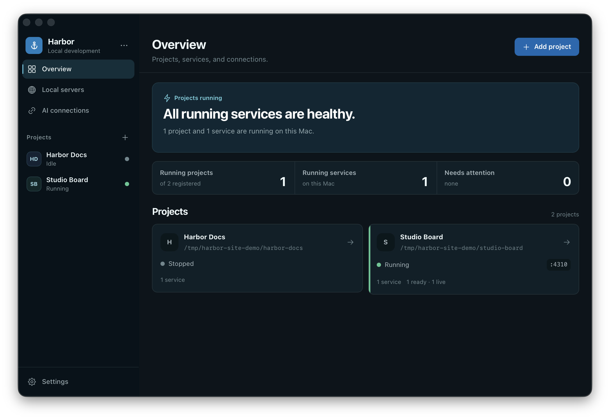

studio-board:3000
Terminal · started 2h ago
Harbor turns a Mac full of mystery servers into a clear set of projects. See what every port belongs to, catch likely duplicates, run complete stacks, and give your coding agents the same source of truth.
Free & MIT licensed · No account · No analytics · macOS 11+ · Apple Silicon + Intel

Starting a dev server is easy. Remembering which terminal owns it, why the port changed, and whether it is safe to stop is the part that quietly gets expensive.
Terminal · started 2h ago
Likely duplicate · isolated process
The terminal-owned server stays monitor-only. The isolated leftover can be reviewed for cleanup.
Harbor combines discovery, project orchestration, and agent control without pretending every process belongs to it.
See ports, commands, working folders, HTTP clues, frameworks, project matches, and likely duplicate runs in one inventory.
Bring up an entire stack in dependency order. Harbor resolves ports, keeps services wired, collects logs, and applies bounded crash recovery.
Claude Desktop, Claude Code, and Codex can inspect servers, read logs, and operate locally approved projects through Harbor’s MCP tools.
Current v0.5.0 interface shown with scrubbed demo data.
Harbor can recognize a server without pretending it owns the process. Cleanup appears only for isolated, untracked listeners—and only after confirmation plus a fresh identity check.
If a process shares a group with Terminal, an IDE, Claude, Codex, or Harbor itself, it stays visible and monitor-only.
The signed native bridge keeps the client side stable while Harbor closes, reopens, or rotates its local MCP token and port.
npxUniversal for Apple Silicon and Intel. Signed by Faba Development and notarized by Apple.
No. Most discovered servers are observation-only. Harbor keeps processes tied to a terminal, IDE, coding agent, or Harbor itself monitor-only. Only isolated leftovers that pass identity checks can be offered for confirmed cleanup.
Harbor’s server inventory and orchestration stay on your Mac. There is no account or analytics. Claude, Codex, and other connected clients follow their own provider privacy behavior.
No. Harbor v0.5.0 bundles a signed native bridge. New client configuration contains only its stable command path—no token, environment variables, or package runner.
No. Harbor is focused on local macOS development: understanding current-user TCP listeners, mapping them to projects, running local stacks, and giving agents a bounded lifecycle surface.
Harbor supports macOS 11 Big Sur or later and ships as a universal app for Apple Silicon and Intel.